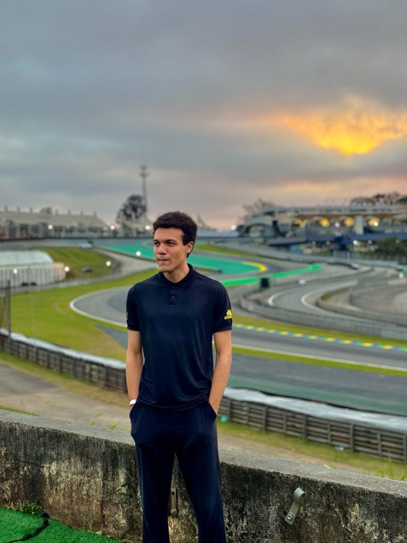
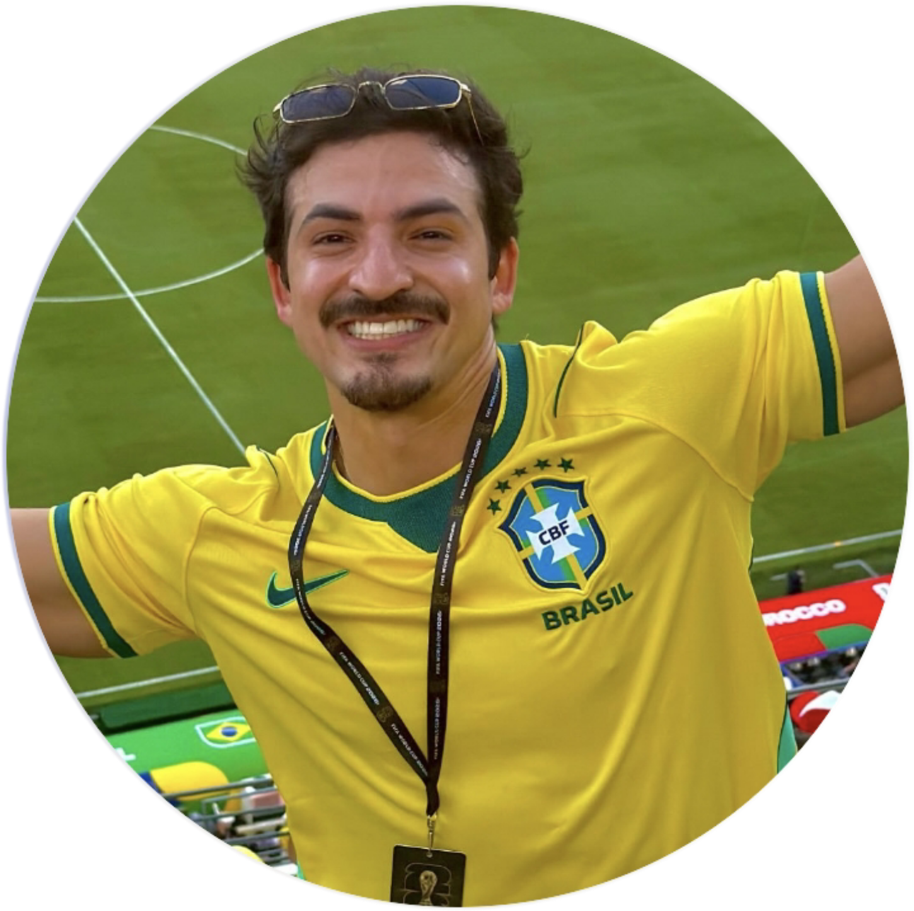
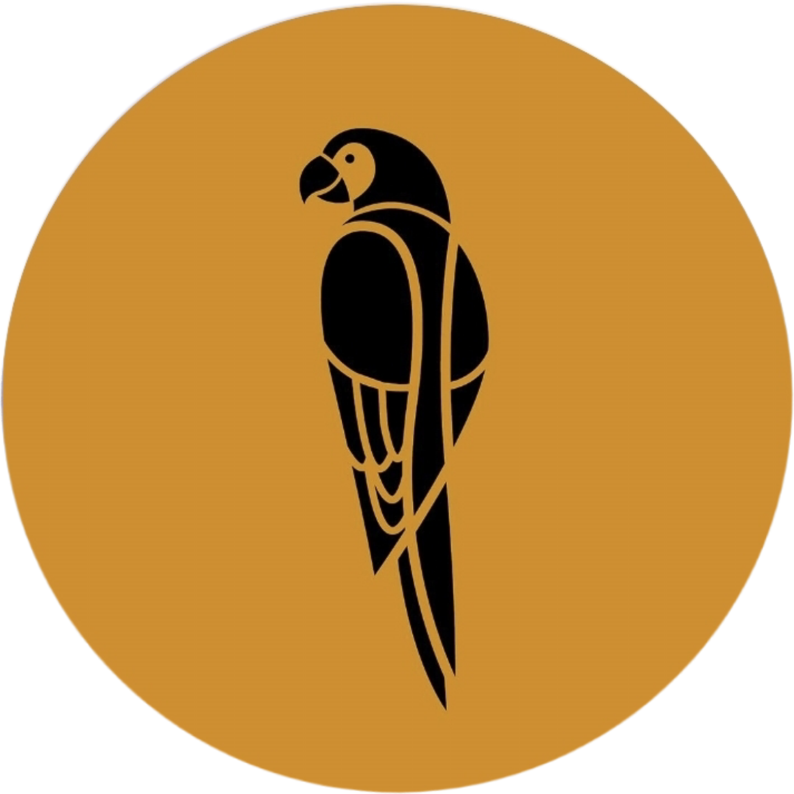
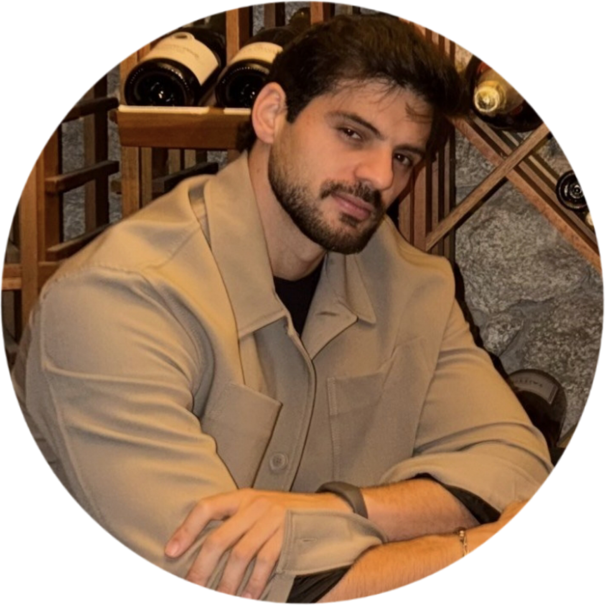
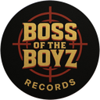
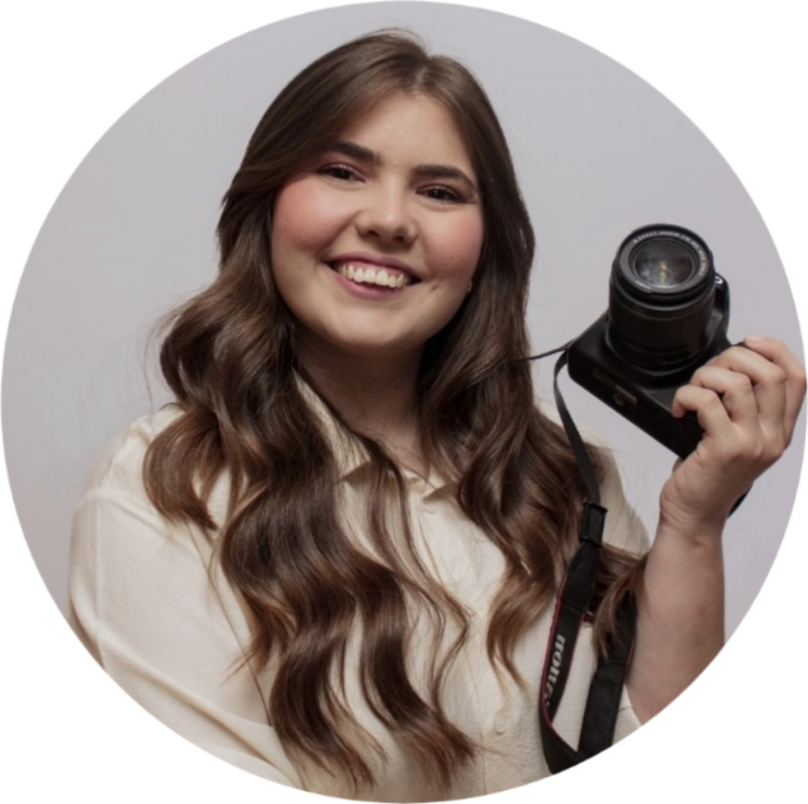

Videomaker e produtor de conteúdo que combina audiovisual, design e estratégia de mídias sociais para transformar marcas e criadores em resultado real de audiência e engajamento.

ZORIEUQ MIRANDAComecei em 2019 como Videomaker voluntário, logo depois de conquistar o ouro nos Jogos Escolares do Estado de São Paulo. Em 2020 assumi a profissão como autônomo, atuando em Design, Videomaker, Social Media, Análise de Mídias Sociais e Fotografia.
Desde 2022 respondo pela produção, edição e content branding gastronômico dos vídeos do criador Guilherme Tank, com campanhas para marcas como Lojas Americanas, Ambev e Seara. Entre 2023 e 2025, um desafio pelo centro-oeste brasileiro me levou a dar palestras e desenvolver comunicação pública. Hoje, em 2026, sigo à frente de um projeto de marketing na Marcenaria Brasileira, mantendo a produção de conteúdo gastronômico e redirecionando os estudos para o cinema.
Marcas e criadores que investem em produção audiovisual estratégica saem na frente — não só em estética, mas em resultado mensurável.
Formação construída no campo, desde trabalhos voluntários até produções para marcas nacionais — sem atalho, com repertório real de bastidor.
Vídeos com mais de 1 milhão de visualizações e 100 mil curtidas, sempre acumulando novos seguidores para os perfis atendidos.
Experiência real apresentando ideias em público, o que se reflete em roteiros mais claros e em relacionamento direto com marca e audiência.
Produção, edição e content branding de vídeos curtos e longos, do roteiro ao corte final.
Gestão e análise de mídias sociais com foco em crescimento de audiência e engajamento.
Identidade visual e registro fotográfico a serviço da narrativa da marca.
Produção e pós-produção de parcerias comerciais com marcas de grande porte.
Captação e edição de vídeos curtos e longos para redes sociais.
Peças gráficas e identidade visual aplicadas ao conteúdo.
Gestão de perfis e estratégia de publicação.
Leitura de métricas para otimizar alcance e engajamento.
Registro fotográfico para marca pessoal e campanhas.
Direção de conteúdo aplicada ao universo food.
Do briefing à entrega final de campanhas publicitárias.
Apresentação de ideias para públicos jovens e adultos.
Mixagem para teatros musicais — realizei a mixagem do musical Além das Cortinas. Assista no YouTube.
Uma linha do tempo de produção real, de instituições locais a marcas nacionais.
Ouro nos Jogos Escolares do Estado de São Paulo, 1º lugar nos 3.000 metros — mesmo ano do início como Videomaker.
Bicampeão nas competições de conhecimento USP para alunos do ensino médio.

Produção, edição e content branding gastronômico para o TikToker e YouTuber, com colabs para Lojas Americanas, Ambev, Almanaque SOS, Lucas Vrau, Seara, Lacta e Manual.
Desafio fora do estado natal, com palestras para jovens e adultos e desenvolvimento de comunicação pública.

Captação e edição de vídeos de ambientes e marcenaria de alto padrão.

Filmmaker e editor de vídeos, além de fotógrafo em eventos.

Mixagem de áudio e edição de clipes musicais para gravadora de Hip Hop, Rap, Trap, Boombap e R&B.

Parceria na pós-produção de ensaios fotográficos e captação em eventos.
Disponível para projetos de produção audiovisual, gestão de conteúdo e parcerias de marca.